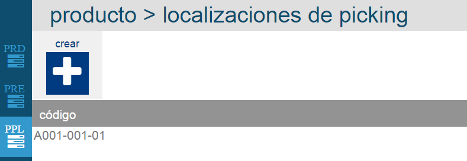
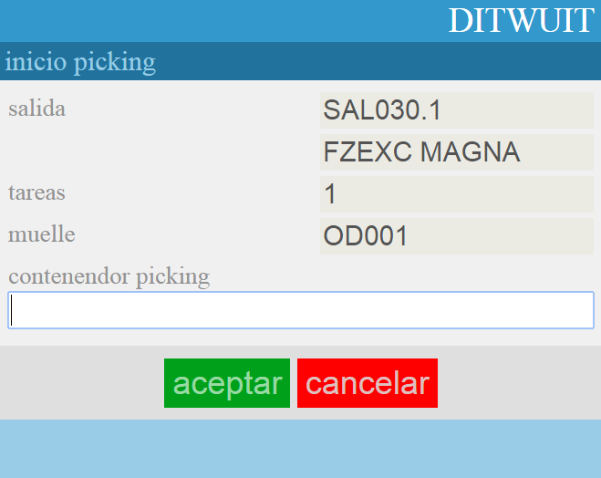
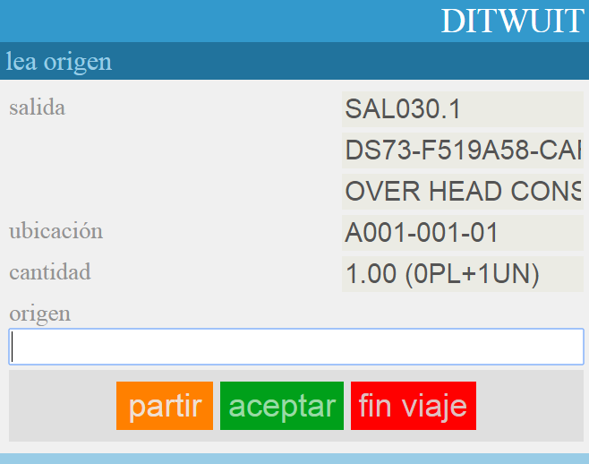
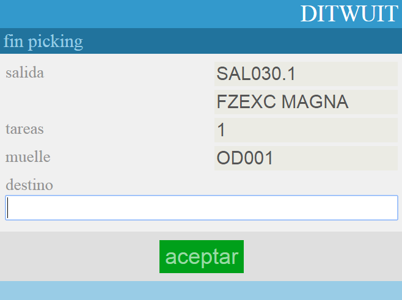
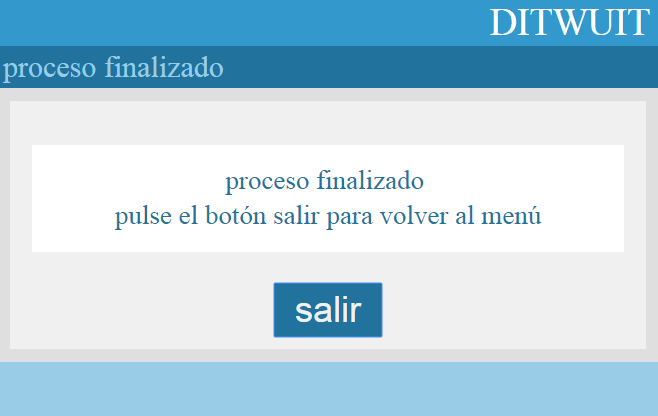

Picking¶
El proceso de picking consiste en la preparación de cantidades inferiores a un palet completo. Normalmente, los restos de palets suelen colocarse en ubicaciones específicas.
Para preparar el picking, eEl artículo debe tener asignada una ubicación a la que el sistema dirigirá para hacer el picking. Esta ubicación se configura en el maestro de productos en la pestaña Localizaciones de Picking.
{kind=link}
Al analizar la tarea de picking desde el programa de radiofrecuencia Picking básico, dirigirá al operario a la ubicación de picking asignada siempre que tenga stock disponible en esa ubicación. Leer la matrícula de contenedor de picking (etiqueta contenedor vacía):
{kind=link}
Mostrará la cantidad a preparar y la ubicación donde se encuentra y solicitará la lectura de la matrícula del pallet del cual se va a extraer la mercancía:
{kind=link}
La opción partir, permite dividir la acción de picking en dos. Solicita la lectura de la ubicación de muelle de destino.
{kind=link}
Y se finaliza la preparación.
{kind=link}